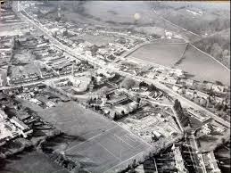

Local History
History of Blanchardstown
Blanchardstown (Baile Bhlainséir) is a large outer suburb of Dublin in County Fingal, Ireland, built out from a small village since the 1960s. It is located 10 km north-west of the city centre. It is within the historical barony of Castleknock in the traditional County Dublin, as well as the Dublin 15 postal area and the Dublin West electoral constituency.
Gangs
A criminal gang from Blanchardstown became notorious as "The Westies". They controlled the heroin trade in west Dublin. One of its leaders, Bernard Sugg, was shot in a pub in Blanchardstown in 2003, while the others were killed in Spain in 2004.
Transport
Train
There are three Irish Rail train stations in the wider Blanchardstown area: Castleknock, Coolmine and Clonsilla
Bus
Ballycoolin Industrial Estate is served by a private bus company called AMC Ballycoolin, also known as Express Bus.Bus Éireann services pass through Blanchardstown on Routes 105,109 and 111.
Dublin Bus and Go-Ahead Ireland routes include 17A, 37, 38, 38A, 38B, 38C, 38D, 39, 39A, 39N, 40D, 70, 76A, 220, 236, 238, 239 and 270